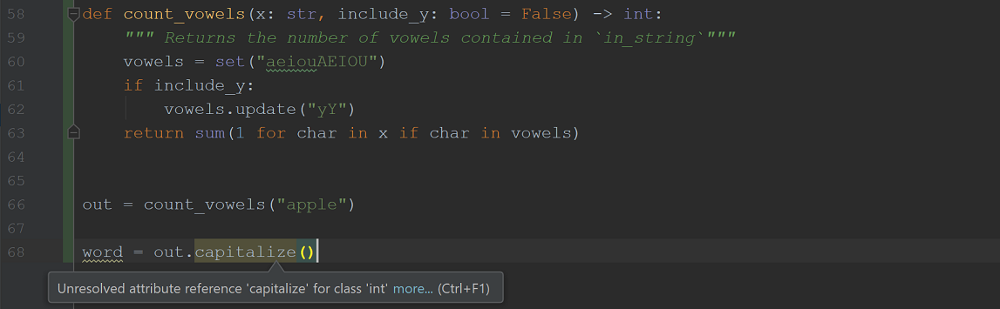

Writing Good Code¶
Throughout PLYMI we have been concerned with learning the rules for writing valid Python code. That is, we have taken care to ensure that our computers can understand the instructions that we have written for them. Here, we will discuss methods for making our code easier for humans to understand. Specifically, we will study:
“PEP8”: the official style guide for Python code.
Python’s system for adding so-called “type hints” to functions.
Formal documentation specifications such as NumPy docs and Napolean docs.
The immediate purpose of discussing these items is that they will help us write code that is easy to understand and maintain. In the long term, they will serve to make our projects long-lived and useful to many more people. It can be surprising to see how quickly a code base can atrophy, becoming opaque and unusable even to its creator, when it wasn’t designed with a sufficient attention to detail and documentation.
It is difficult to overstate the importance of this material.
The PEP8 Style Guide to Python Code¶
What is a PEP?
We will be referencing several “PEPs” in this section. PEP stands for Python Enhancement Proposal. Any fundamental changes to the core Python language, the CPython interpreter, or the modules in Python’s standard library must first be submitted as a PEP, which goes through an approval process. You can read more about the purposes and guidelines of PEPs here. The complete index of PEPs is available here.
PEP 8 is a design document that specifies a coherent code style guide for the Python community.. It touches on a wide array of “dos” and “don’ts” when making style decision in your code. Many of these items are exceedingly simple. For example, PEP 8 calls for the inclusion of a single whitespace around binary mathematical operators; e.g.:
# Do:
x = x + 1
# Don't:
x=x+1
The biggest impact that this document has is that it guides Python users to write similar-looking code. Thus, writing code that adheres to PEP8 will ensure your code is easy for others to read, and vice versa. Note that the code you have encountered throughout PLYMI adheres to this style guide.
We will make salient some of the PEP8 guidelines that are most pertinent to the variety of code that you have encountered in your reading thus far. That being said, you should take the time to read through PEP 8 in full, and consult it regularly when you write code. It won’t take long for you to internalize most of its guidelines. Lastly, note that many IDEs have have tools called “linters” that will parse your code and warn you when your code is in violation of PEP8’s guidelines. This is an excellent mechanism for ensuring that your code adheres to this style specification.
Being Pythonic¶
We will being by studying some guidelines for writing idiomatic Python code. That is, these guide us to follow the syntax that the creators of Python intended for us to use.
For instance, always leverage the negated operators is not and not in. For example not x is None and x is not None are functionally equivalent, but the latter is clearly preferable as it matches our native grammar.
# Do:
x not in collection
# Don't
not x in collections
# Do:
x is not None
# Don't
not x is None
Do not use parentheses to create unnecessary closures. Parentheses should be used for specifying function signatures, calling objects (e.g. calling a function), associating mathematical operations, defining generator-expressions, and grouping long multi-line expressions.
# Do:
if x > 2:
x += 1
# Don't:
if (x > 2):
x += 1
# Do
if (long_variable_name in a_long_list_name
and long_variable_name not in another_long_name):
x += 1
# Don't
if long_variable_name in a_long_list_name and long_variable_name not in another_long_name:
x += 1
# Do:
for i in numbers:
x.append(i**2)
# Don't:
for i in numbers:(
x.append(i**2)
)
Finally, make use of boolean values for non-boolean objects in conditional expressions. For example, you can rely on the fact that empty sequence-objects will evaluate to False in conditional statements.
# Do:
if list_of_names:
x += 1
# Don't:
if len(list_of_names) > 0:
x += 1
# Do:
result = "on" if integer_flag else "off
# Don't:
result = "on" if integer_flag != 0 else "off
Naming Conventions¶
Class names should use the CamelCase (aka CapWords) formatting convention, whereas functions and variables should use all-lowercase characters in their names. Underscores can be used in longer lowercased names to make them easier to read (i.e. snake_case).
# naming conventions for classes
# Do:
class ShoppingList:
pass
# Don't:
class shoppingList:
pass
# naming conventions for local variables and functions
# Do:
list_of_students = ["Alyosha", "Biff", "Celine"]
def rotate_image(image):
pass
# Don't
ListOfStudents = ["Shmangela", "Shmonathan"]
def rotateimage(image):
pass
To be clear, there is nothing fundamentally correct about using CamelCasing for class names and snake_casing for functions and variable names. That being said, most Python users expect code to adhere to these conventions and will struggle to understand and use your code if you do not adhere to them.
Constants - variables whose values are not to be changed anywhere within the code - should be specified using ALL_CAPS. Underscores can be used for improving readability.
# naming conventions for constants
# Do:
BOILING_POINT = 100 # celsius
# Don't:
boiling_point = 100 # celsius
Variables that are only to be used internally within the code by developers can be identified using a leading underscore. For example, if you encounter the line of code _use_gpu = True, this means that the variable _use_gpu is only meant to be viewed and edited by the people who are actually writing the code. Note that this variable will not behave differently from use_gpu - the leading underscore is simply a visual indicator and nothing more.
You can use a trailing underscore when your variable name would otherwise conflict with terms reserved by Python. For example you cannot name a variable class, as this term is reserved by Python for defining a new class-object. Instead you could name the variable class_. This should be used only sparingly.
Paramount to all of this is that variables are given descriptive names.
# Do:
for temperature in list_of_temperatures:
pressure = gauge(temperature)
# Don't:
for thing in x:
thingthing = f(thing)
# No this is not an exaggeration.
# I have really seen code like this.
Indentations and Spacing¶
You should use spaces, not tabs, when creating indentations.
Scope-delimiting indentations should always consist of four spaces.
# using four spaces to delimit scope
# Do:
if x > 0:
x = 2 # indented by four spaces
# Don't:
if x > 0:
x = 2 # indented by not-four spaces
Use hanging indentations to wrap a long line of code over two or more lines. That being said, you should ensure that contents within parentheses or brackets are aligned vertically:
# Using hanging indents to manage long lines of code
# Do: use whitespace to align multi-line arguments in
# a function signature
if isinstance(item, str):
output = some_long_function_name(arg1, arg2, arg3,
arg4, arg5, arg6)
# Don't:
if isinstance(item, str):
output = some_long_function_name(arg1, arg2, arg3,
arg4, arg5, arg6)
# Do:
grocery_list = {"apple": 2, "banana": 10, "chocolate": 1e34,
"toothpaste": 1, "shampoo": 1}
# Don't: second line is under-indented
grocery_list = {"apple": 2, "banana": 10, "chocolate": 1e34,
"toothpaste": 1, "shampoo": 1}
# Do
x = [[i**2 for i in list_of_ages if i > 10]
for list_of_ages in database]
# Don't: second line is over-indented
x = [[i**2 for i in list_of_ages if i > 10]
for list_of_ages in database]
Function and class definitions should be separated by two blank lines:
# separating function and class definitions using two blank lines
# Do:
def func_a():
"""I am function a"""
return 1
def func_b(): # separated from func_a by two blank lines
"""I am function b"""
return 2
# Don't:
def func_c():
"""I am function c"""
return 1
def func_d(): # separated from func_c by one blank line
"""I am function d"""
return 2
Default-values for arguments in functions should be specified without any surrounding whitespace. This also holds when calling a function using a named argument.
# default values should not have whitespace around them
# Do:
def func(x, y=2):
return x + y
# Don't:
def func(x, y = 2):
return x + y
# Do:
grade = grade_lookup(name="Ryan")
# Don't:
grade = grade_lookup(name = "Ryan")
As in written English, commas and colons should both follow a non-space character and should be followed by a whitespace. An exception to this is when there is a trailing comma/colon at the end of the line of code, or when a colon is used in a slice.
# a comma/colon should be followed by a whitespace
# Do:
x = (1, 2, 3)
# Don't
x = (1,2,3)
x = (1 , 2 , 3)
# Do:
x = {1: "a", 2: "b", 3: "c"}
# Don't:
x = {1 : "a", 2 : "b", 3 : "c"}
x = {1:"a", 2:"b", 3:"c"}
# Do:
# (1,) is a tuple containing the integer 1.
# Recall that (1) is the same as 1. The
# trailing comma is necessary for it to
# be treated as a tuple.
x = (1,)
# Don't:
x = (1, )
# Do:
# a simple slice should not contain whitespaces
sublist = x[1:4]
# Don't:
sublist = x[1: 4]
To conclude, consider that simply knowing that there exists a Python style guide, and that it is named PEP8, is the most important thing to take away from this section. Previously, you may not have even thought to search for such a document. That you consult PEP8 when you have code-style questions is the most important outcome here.
Automating Style:
Although adhering to a clear and consistent style is critical for writing “good code,” enforcing such standards can be tedious and labor-intensive. This is especially true when you begin collaborating with others and working on large projects. Fortunately, several powerful tools exist that can help us automate good code styling.
flake8: Analyzes your code to enforce the PEP8 standards and to catch bad code patterns, such as unused variables.
IDEs like Visual Studio Code and PyCharm will automatically configure themselves to run flake8 or comparable linters on your code. They will add visual marks to your code to highlight problematic sections of code. This tool can also be run from the command line, or be configured to run automatically with other IDEs and text editors.
isort: “I sort your Python imports so you don’t have to”
As promised, this tool manages the unruly stack of import statements that quickly accrue at the top of our code. It will sort import statements alphabetically, and will group them in accordance with PEP8.
black: “Any code style you like, as long as it is black”
Black is an uncompromising code formatter. You need not spend time formatting code correctly if you run black - it will format your code the same way every time. While this will take care of managing things like line-breaks, indentation, spacing, and brackets for you, it is still your responsibility to write code that is Pythonic and to use good naming conventions.
It is useful to know that these tools exist; consider integrating them into your workflow as you become an increasingly-prolific “Pythoneer”.
Takeaway:
PEP8 is a design document for the Python community that specifies a coherent style guide for writing Python code. Adhering to this style guide will help to ensure that you write clean code that is organized in a consistent manner across projects. Furthermore, those who abide by PEP8 will find it easier to navigate other PEP8-adherent code bases.
Type-Hinting¶
Type hinting is a syntax that was introduced in Python 3.5 (via PEP 484), which permits users to annotate their function definitions to indicate the object-types of a function’s inputs and outputs. For example, let’s define a function that counts the number of vowels in a string and annotate the function signature with type-hints.
# A function signature that has been annotated with type-hints
def count_vowels(x: str) -> int:
"""Returns the number of vowels contained in `in_string`"""
vowels = set("aeiouAEIOU")
return sum(1 for char in x if char in vowels)
Here, we have “hinted” that x should be passed a string-type object, and that the function will return an integer-type object. The general form of an annotated function, with an arbitrary number of positional arguments and default-valued arguments is as follows:
def func_name(arg: <type>, [...], kwarg: <type> = <value>, [...])) -> <type>:
See that each argument name is followed by a colon and the type-object that serves as the type-hint. The return type of the function comes after the closing parenthesis of the signature; it is preceded by the arrow -> and is followed by the colon that ends the function signature. The same syntax can be used to annotate methods in a class definition.
Let’s modify count_vowels and add a default-valued argument that permits users to optionally include ‘y’ as a vowel.
# Type-hinting a default-valued argument
def count_vowels(x: str, include_y: bool = False) -> int:
"""Returns the number of vowels contained in `in_string`"""
vowels = set("aeiouAEIOU")
if include_y:
vowels.update("yY")
return sum(1 for char in x if char in vowels)
Here, we have hinted that include_y is expected to be passed a boolean-type object, and that it has a default value of False. It is important to take some time to grow accustomed to seeing the form include_y: bool = False. This can be difficult to parse at first. Keep in mind that : bool is the type-hint here and = False specifies the default argument. The ordering of these statements are not interchangeable - a type-hint must immediately follow the variable name.
Python 3.6, via PEP 526, introduced a syntax for annotating standalone variables in your code. For example, suppose that you are initializing a list in your code that will store even numbers. You can annotate this variable as:
# annotating a variable with a type-hint
from typing import List, Set
names: Set[str] = []
odd_numbers: List[int] = []
this permits us to document that the empty list will be used to store integers. You can also annotate a variable without providing an initial value.
# annotating a variable, without providing a value
max_num: int
Note that this variable-annotation syntax is not valid for versions of Python earlier than Python 3.6, and the function-annotation syntax is not valid for versions prior to Python 3.5. A formal theory of type-hinting is discussed in PEP 483.
What is It Good For? (Absolutely Nothing)¶
As far as the Python interpreter is concerned, type-hints have no impact on your code other than adding documentation. That is, Python will not enforce any type-checking based on your type-hints. This is in stark contrast to strongly-typed languages, like C++, where you are required specify input and output types for a function as constraints that are strictly enforced by the compiler.
Indeed, in Python we are free to pass whatever we want to our function regardless of its annotated type-hints. Let’s pass an empty list, instead of a string, to the count_vowels function that we defined above.
# Type-hints do not actually enforce type-checking.
# Here we pass an empty list instead of a string without
# any warnings/errors being raised
>>> count_vowels([])
0
See that our function pays no notice to the fact that we violated our type-hint, which suggests that we will be passing in a string. It happily loops over the empty list and sums over zeros entries, thus the function returns 0. This is why these annotations are merely called type hints, and not type requirements.
While the CPython interpreter will never require or enforce type-hints during the lifetime of Python 3, there are 3rd party libraries and tooling that makes keen use of these annotations. It is these 3rd-party capabilities that make type-hinting worth using. IDEs like PyCharm and VSCode can leverage type hints to great effect. They will warn you when you pass objects to your function that do not abide by the type hints, and they will also leverage these annotations to keep track of the objects that are returned by the function.
For example, suppose that we are using the count_vowels function in a library of code that we are developing, and we mistakenly think that the output of this function is a string that we want to capitalize. Our IDE will see that we are trying to capitalize an integer and will thus warn us:

This saves us the trouble of having to run our code, hit an error, read through the stack trace, and debug our mistake. Instead, we immediately see our inconsistency get flagged. In fact, we probably never would have even made the mistake at all, as our IDE would have shown a list of integer-methods for us to choose from, and not string-methods. Type-hints would have likely alerted us to our misapprehension.
It does not take long to experience the benefits of type-hinting through your IDE. This both accelerates your coding by informing you of the object types that you are working with on the fly, and helps to expose oversights in your code as soon as they are made.
Finally, it is also worthwhile to highlight two projects, mypy and pyright, which are used to perform static type-checking on your code based on your type-hints. That is, mypy and pyright will both automatically traverse your code and find potential bugs by identifying type conflicts in your code (e.g. trying to capitalize an integer) by checking their annotated and inferred types. These tools are especially useful for large-scale code bases. Companies like Dropbox and Microsoft make keen use of static type-checking to identify inconsistencies in their code without having to hit runtime errors. Keep mypy, pyright, and other type-checking utilities in mind as you mature as a Python developer and find yourself working on projects of growing complexity. If you are using VSCode as your IDE, you can install the PyLance VSCode extension to leverage pyright’s type checking within your IDE.
Reading Comprehension: Type-Assisted Code Completion
The jedi package, which is installed by default alongside Jupyter and IPython, enables type-informed code completion. This means that we can benefit from type-hints even when we are working in a Jupyter notebook!
In a Jupyter notebook, write the following type-annotated signature for a function: def f(x: str):. Now in the body of the function (i.e. on the next line, and indented inwards), try typing x. and then hit <TAB>.
def f(x: str):
x.#hit <TAB> here
You should see a list of methods appear for x. What are the first three methods that appear? Do these make sense based on the annotation associated with x? Now change the annotation for x to be list and trigger the auto-completion in the editor again; do you see an updated list of methods?
Takeaway:
There is a simple syntax for annotating functions, class-methods, and variables with type-hints; this is a formal mechanism for documenting the types of objects that are expected as inputs to the function, as well as the return type of the function. It is critical to note that that type-hints are never enforced by Python - they only serve as a form of documentation.
That being said, IDEs have powerful abilities to inspect type-hints and to highlight potential inconsistencies in your code. These capabilities can greatly facilitate your code-development. There are also third-party libraries like mypy and pyright that can be used to provide more rigorous type enforcement in your code.
Using the typing Module¶
Although we can use Python’s built-in type objects (e.g. list and dict) for type-hinting, the standard library’s typing module provides objects that are used to form more descriptive hints. For example, suppose that we want to write a function that takes in a list of integers as an input. Using the built-in list object for our type-hint prevents us from indicating that the list should house integers. Using typing.List, on the
other hand, supports a richer syntax for type-hinting: typing.List[int] specifies “a list of integers.” Familiarizing yourself with the typing module is the first step to writing good type hints.
The following is a summary some of the most critical members of the typing module, along with examples for using them.
Any¶
What it hints: Any type of object
Union[<type>, <type>]¶
What it hints: Either of two types of objects
Examples: Hint an integer or a boolean:
Union[int, bool]
Optional[<type>]¶
What it hints: Either
<type>orNone, withNoneas the defaultExamples: Hint an object that is
Noneby default, but will be a string otherwise:Optional[str]
None¶
What it hints: Simply the object
None
List[<type>]¶
What it hints: A list containing an arbitrary number of objects of a given type
Examples:
Hint a list of strings:
List[str]Hint a list of strings and integers:
List[Union[str, int]]Hint a list of lists of anything:
List[List[Any]]orList[List]
Tuple[<type>, ...]¶
What it hints: A tuple containing a specific number of objects of the specified types.
...can be used to indicate an arbitrary number of objects in the tupleExamples:
Hint a tuple containing one string and one boolean:
Tuple[str, bool]Hint a tuple containing an arbitrary number of integers:
Tuple[int, ...]
Set[<type>]¶
What it hints: A set containing an arbitrary number of objects of a given type
Examples:
Hint a set of floats:
Set[float]Hint a set of tuples (each containing two integers):
Set[Tuple[int, int]]
Dict[<key-type>, <value-type>]¶
What it hints: A dictionary that maps keys of a given type to values of a given type
Examples:
Hint a dictionary that maps strings to integers:
Dict[str, int]Hint a dictionary that maps any hashable to booleans:
Dict[Hashable, bool]|
Callable[[<arg-type>], <output-type>]¶
What it hints: A callable (e.g. a function or a method) that takes in arguments of specified types and returns the specified type
Examples:
Hint a function that takes in a string and an integer and returns
None:Callable[[str, int], None]Hint a method that accepts arbitrary arguments and returns a boolean:
Callable[..., bool]
Literal[<value>, ...]¶
What it hints: That the variable will be passed one of the exact values
Examples:
Hint that a variable that will be the integer
1:Literal[1]Hint that a variable that will be the either the string
"sum"or the string"mean":Literal["sum", "mean"]Hint that a variable that will be either the list
[1, 2]or the string"abc":Literal[[1, 2], "abc"]
Compatibility Note: The
Literaltype-hint was introduced in Python 3.8 - it is not available in earlier versions of Python.
Let’s take, for example, a function that takes in:
a dictionary of student grades, which maps names (strings) to grades (list of floats)
a custom function for computing statistics over a list of numbers
a list of names of students for whom we want to compute statistics, whose default is all students
and returns a list of tuples, with each tuple containing a student’s name and their stat.
from typing import Dict, Callable, Optional, List, Tuple, Any
def compute_student_stats(grade_book: Dict[str, List[float]],
stat_function: Callable[[List[float]], Any],
student_list: Optional[List[str]] = None) -> List[Tuple[str, Any]]:
"""Computes custom statistics over student's grades.
Parameters
----------
grade_book : Dict[str, List[float]]
The dictionary (name -> grades) of all of the students' grades.
stat_function: Callable[[List[float]], Any]
The function used to compute statistics over each student's grades.
student_list : Optional[List[str]]
A list of names of the students for whom statistics will be computed.
By default, statistics will be computed for all students in the gradebook.
Returns
-------
List[Tuple[str, Any]]
The name-stats tuple pair for each specified student.
"""
if student_list is None: # default to all-students
student_list = sorted(grade_book) # iterates over the dictionary's keys
return [(name, stat_function(grade_book[name])) for name in student_list]
(Note that we have also included a detailed NumPy-style docstring; we will discuss this documentation style in detail in the following subsection).
There are a few details to take note of here. First, see that we need not make any assumptions about what type of object is returned by stat_function. It might return the mean-value as a single floating point number, or perhaps a tuple of the mean, median, and mode, etc. Thus we document its output type as Any; this is reflected in our function’s return type as well: List[Tuple[str, Any]]. As we will discuss shortly, it is prudent to be discerning but general in one’s type-hints.
Next, note that Optional[List[str]] is used to indicate that the default-value of student_list is None, but that we can otherwise pass it a list-of-strings. This is cleaner to read than the equivalent hint Union[None, List[str]] and it indicates that None is indeed the default-value.
In the case that you have defined your own type (akaclass), you can simply provide the resulting class object in an annotation. This type-hints that a variable is expected to be an instance of that type. If, instead, you have the rare case of hinting that the class object itself (not an instance of the class) is expected, you can use typing.Type to indicate this.
Let’s write a silly example to demonstrate these points. We will define our own Dog class, and will write a function that expects the Dog class-object itself (type-hinted as Type[Dog]). The function will create several instances of the Dog class (type-hinted simply as Dog), and will return them in a list.
# type-hinting a custom class
from typing import List, Type
class Dog:
def __init__(self, name):
self.name = name
# cls is expected to be the class-object, `Dog`, itself
# This function returns a list of instances of the `Dog` type
def list_famous_dogs(cls: Type[Dog]) -> List[Dog]:
return [cls(name) for name in ["Lassie", "Shadow", "Air Bud"]]
You can also create a type alias, which you can define in your code and use in your annotations. For example, if you will regularly be passing around a tuple containing five Dog-instances, you can define an alias to help make your type-hints more succinct:
# creating an alias for a type
Pack = Tuple[Dog, Dog, Dog, Dog, Dog]
def find_alpha(dogs: Pack) -> Dog:
...
Object types defined in 3rd-party libraries, e.g. NumPy’s ndarray behave no differently from our own custom custom classes; simply provide the class object in the type-hint annotation:
# type-hinting an nd-array from numpy
import numpy as np
def custom_dot_product(x: np.ndarray, y: np.ndarray) -> float:
return float(np.sum(x * y))
Eventually, popular 3rd party libraries like NumPy will contribute their own typing modules so that you can provide higher-fidelity hints that indicate things like data-type and array-shape. NumPy developers are currently working on this.
Takeaway:
Python’s typing module contains objects that are used to create descriptive type-hints. For example, whereas list can only be used to type-hint a list, typing.List[str] describes a list-of-strings. These can also be used to create concise aliases for convoluted type-hints that will be used frequently throughout your code.
In general, a class object can be used for type-hinting, and it indicates that a variable should be an instance of that class. For example, numpy.ndarray hints that a variable should be passed an instance of the nd-array class.
Writing Good Type-Hints (quack quack)¶
You should strive to write type-hints that pass the duck test: if your function is expecting a duck then hint for something that walks like a duck, quacks like a duck, etc. This will help you avoid writing type-hints that are overly narrow, and which are ultimately non-Pythonic in their strictness.
To be more concrete, let’s revisit our count_vowels function:
def count_vowels(x: str, include_y: bool = False) -> int:
"""Returns the number of vowels contained in `in_string`"""
vowels = set("aeiouAEIOU")
if include_y:
vowels.update("yY")
return sum(1 for char in x if char in vowels)
Look carefully at how x is used in this function. We simply iterate over x in a for-loop - there is nothing string-specific about this. We could pass a string, a tuple, a list, or anything that supports iteration to this function, and it will happily count the vowels in x:
# `count_vowels` can operate on any iterable of strings
>>> count_vowels("apple")
2
>>> count_vowels(['a', 'p', 'p', 'l', 'e'])
2
>>> count_vowels(('a', 'p', 'p', 'l', 'e'))
2
>>> count_vowels({'a', 'p', 'p', 'l', 'e'})
2
It is over-restrictive and un-Pythonic to type-hint x as str. Let’s make our type-hint more accommodating.
The typing module provides a so-called abstract base class, Iterable, which is a generic type for any class that supports iteration. Thus we can improve our type-hint by making it more general. This encapsulates all of the above use-cases that we demonstrated.
from typing import Iterable
def count_vowels(x: Iterable[str], include_y: bool = False) -> int:
"""Returns the number of vowels contained in `in_string`"""
vowels = set("aeiouAEIOU")
if include_y:
vowels.update("yY")
return sum(1 for char in x if char in vowels)
(To be completely general, we could have hinted Iterable[Hashable], as we are relying on the entries of x to be hashable to check for their membership in the set of vowels. It is up to you to determine how abstract you want your ducks to be.)
It is is important to review the abstract base classes (abc’s) for Python’s collections (yes, I am encouraging you to learn your abc’s). This will help you classify categories of types generally, based on their special methods. Two of the most common abc’s are Iterable: any class that supports the iteration protocol, and
Sequence: any collection that has a length (via __len__) and supports the get-item syntax (via __getitem__).
Reading Comprehension: Type Hinting
Read through the following function and annotate its signature with type-hints. Try to make your type-hints sufficiently general here.
def get_first_and_last(x):
"""Returns the first and last elements of `x`. `x` is
assumed to be non-empty
"""
return (x[0], x[-1])
Here are some examples of this function in action. Be sure that your type-hint captures all of this diversity.
>>> get_first_and_last("hello")
('h', 'o')
>>> get_first_and_last([0, 1, 2, 3])
(0, 3)
>>> get_first_and_last((True, False))
(True, False)
Takeaway:
It is un-Pythonic to be overly strict when type hinting. Python handles typing flexibly - it uses duck typing - and our type hints should follow suit. Rely on abstract base classes when possible to provide the appropriate guidelines for a particular variable type.
Documentation Styles¶
Davis King, a prolific and talented open source developer, is the creator of the dlib C++ library. Among the library’s major features, like machine learning algorithms, Davis lists its documentation as the first and foremost feature. In fact, he says about dlib:
I consider the documentation to be the most important part of the library. So if you find anything that isn’t documented, isn’t clear, or has out of date documentation, tell me and I will fix it.
There is great wisdom in placing such a high value on documentation. In this section, we will learn about two popular docstring-style specifications for Python: the NumPy specification and the Google specification. Both of these are rich extensions of the rudimentary docstring conventions that are proposed in PEP 257, and, critically, they both place an emphasis on documenting the variable types.
PLYMI uses Numpy-style docstrings throughout most of the text (except for when we are trying to keep the functions brief). This is ultimately just a choice of style/aesthetics. Ultimately, the critical takeaway here is to pick a documentation style, learn it, and stick to it faithfully. Once again, it is hard to overstate how important it is to anchor your code with clear and consistent documentation. It will aid you in your code-writing process, it will enable users to adopt and perhaps contribute to your code, and it will ensure longevity for your hard work.
The NumPy Documentation Style¶
The NumPy documentation style is specified in full here. It is strongly recommended that you read through it in full. There are details in the specification that we will pass over here for the sake of simplicity and to avoid rewriting their specification. We will focus on the guidelines for documenting functions, but note that they specify rules for documenting classes and modules.
A function’s docstring is divided up into several sections. Most of these sections are delimited with a header, e.g. “Parameters”, followed by a horizontal line of dashes:
Parameters
----------
A docstring should at least consist of:
A succinct, single-line description of the function.
An extended summary of the function, which provides a more verbose description of things.
A
Parameterssection, which details the types of the input parameters along with descriptions of them. (This section is not necessary if your function is parameterless).A
Returnssection (orYieldsfor a generator), which details the object that is returned by the function. (This is not necessary if your function always returnsNone).
There are additional, optional sections that can be used to improve your documentation:
A
Notessection, which can be used to discuss tertiary details of the function, such as a description of the algorithm that was used. You can also include mathematical formulae here, and cite primary materialsA
Referencessection, used to document any works that were cited in the “Notes” section. It is not very common to need to reference primary sources in your docstrings.An
Examplessection, which contains console-style code, similar to the code snippets that you see in PLYMI, for using your function.
There are additional, more obscure or technical sections that you can read about in the formal specification.
The following function has a docstring that exemplifies all of these sections.
def pairwise_dists(x: np.ndarray, y: np.ndarray) -> np.ndarray:
"""Computes pairwise distances between the rows of ``x`` and ``y``.
Returns the shape-(M, N) array of Euclidean distances between
the M rows of ``x`` and the N rows of ``y``.
Parameters
----------
x : numpy.ndarray, shape=(M, D)
An optional description of ``x``
y : numpy.ndarray, shape=(N, D)
An optional description of ``y``
Returns
-------
numpy.ndarray, shape=(M, N)
The pairwise distances
Notes
-----
This function uses the memory-efficient vectorized implementation that
is detailed in [1]_.
References
----------
.. [1] Soklaski, R. (2019, Jan 21). Array Broadcasting.
Retrieved from https://www.pythonlikeyoumeanit.com
Examples
--------
Compute the pairwise distances between the rows of a shape-(3, 3) array
with the rows of a shape-(2, 3) array.
>>> import numpy as np
>>> x = np.array([[1., 2., 3.],
... [4., 5., 6.],
... [7., 8., 9.]])
>>> y = np.array([[1., 2., 3.],
... [4., 5., 6.]])
>>> pairwise_dists(x, y)
array([[ 0. , 5.19615242],
[ 5.19615242, 0. ],
[10.39230485, 5.19615242]])
"""
...
See that we specify type information in the Parameters and the Returns section of the docstring, even though it is redundant with the function signature’s type-hints - it is useful to have this information in the docstring too. This is a good place to embellish the type information with pertinent information that is not conveyed by the formal type-hints. For example, we added shape information alongside the types in these sections.
Variable names should be referenced using double back-ticks within the docstring; e.g. ``x``. It should also be noted that that including an Examples section is very useful for creating high-quality documentation. It is recommended that you include examples liberally throughout your code.
Here is another example docstring that adheres to the NumPy-style, one without a Notes and References section:
def compute_student_stats(grade_book: Dict[str, Iterable[float]],
stat_function: Callable[[Iterable[float]], Any],
student_list: Optional[List[str]] = None) -> List[Tuple[str, Any]]:
"""Computes custom statistics over students' grades.
Applies ``stat_func`` over a list of each student's grades,
and accumulates name-stat tuple pairs in a list.
Parameters
----------
grade_book : Dict[str, List[float]]
The dictionary (name -> grades) of all of the students'
grades.
stat_function: Callable[[Iterable[float]], Any]
The function used to compute statistics over each student's
grades.
student_list : Optional[List[str]]
A list of names of the students for whom statistics will be
computed. By default, statistics will be computed for all
students in the grade book.
Returns
-------
List[Tuple[str, Any]]
The name-stats tuple pair for each specified student.
Examples
--------
>>> from statistics import mean
>>> grade_book = dict(Bruce=[90., 82., 92.], Courtney=[100., 85., 78.])
>>> compute_student_stats(grade_book, stat_function=mean)
[('Bruce', 88.0), ('Courtney', 87.66666666666667)]
"""
...
The Google Documentation Style¶
The Google documentation style is specified in full here; it is part of the complete Google Python style guide. The docstring style specified here is quite succinct in comparison to the NumPy spec. It consists of the following sections:
A succinct, single-line description of the function.
An extended summary of the function, which provides a more verbose description of things.
An
Argssection, which details the types of the input parameters along with descriptions of them. (This section is not necessary if your function is parameterless).A
Returnssection (orYieldsfor a generator), which details the object that is returned by the function. (This is not necessary if your function always returnsNone).
There is also a Raises section in the case that your function raises exceptions under known conditions.
Let’s reproduce the docstrings for pairwise_dists and compute_student_stats using the Google style.
def pairwise_dists(x: np.ndarray, y: np.ndarray) -> np.ndarray:
"""Computes pairwise distances between the rows of ``x`` and ``y``.
Returns the shape-(M, N) array of Euclidean distances between
the M rows of ``x`` and the N rows of ``y``.
Args:
x (numpy.ndarray) : A shape-(M, D) array
y (numpy.ndarray) : A shape-(N, D) array
Returns:
(numpy.ndarray): A shape-(M, N) array of the pairwise distances
"""
...
def compute_student_stats(grade_book: Dict[str, Iterable[float]],
stat_function: Callable[[Iterable[float]], Any],
student_list: Optional[List[str]] = None) -> List[Tuple[str, Any]]:
"""Computes custom statistics over students' grades.
Applies ``stat_func`` over a list of each student's grades,
and accumulates name-stat tuple pairs in a list.
Args:
grade_book (Dict[str, List[float]]): The dictionary
(name -> grades) of all of the students' grades.
stat_function (Callable[[Iterable[float]], Any]): The
function used to compute statistics over each
student's grades.
student_list (Optional[List[str]]): A list of names of
the students for whom statistics will be computed.
By default, statistics will be computed for all
students in the grade book.
Returns
(List[Tuple[str, Any]]): The name-stats tuple pair for each
specified student.
"""
...
See that this style produces docstrings that are succinct, but are sometimes crowded horizontally given the successive levels of indentation within each docstring-section.
It must also be noted that the Napolean project, which facilitates the automated generation of HTML documentation-pages from Python docstrings, has extended the Google specification to match the sections of the NumPy style. The Napolean version of the NumPy and Google docstring styles can be found here. This resource also includes useful examples of docstrings for modules and classes.
Takeaway:
Take some time to review the NumPy and Google docstring specifications, pick one, and stick to it faithfully when documenting your code. If you plan to code with others, find out if they have already chosen a documentation style.
Documentation Tools:
Sphinx is a popular and hugely-powerful tool that will render documentation for your project in HTML by parsing the docstrings that are in your code. Python, NumPy, and almost all major 3rd party Python libraries use Sphinx to publish their documentation pages. Napolean and numpydoc are Sphinx extensions that allows Sphinx to parse and nicely render docstrings that adhere to the NumPy and Google docstring specifications.
custom_inherit is a lightweight tool for inheriting and merging docstrings. It provides rich support for merging the various sections of docstrings, and supports NumPy and Google-style docstrings natively. It also supports custom documentation styles.
Links to Official Documentation¶
Reading Comprehension Solutions¶
Type-Assisted Code Completion: Solution
The tab-completion reveals methods like “capitalize”, “casefold”, and “center” – all of which are string methods. These are made available despite the fact that x did not yet refer to a specific string. Instead, the type-hint was able to tell the editor that x will refer to a string, and this was enough to inform these type completions.
Revising the type-annotation for x to be list affects the auto-completion options accordingly: the editor will now suggest list methods like “append”, “clear”, and “copy”.
Type Hinting: Solution
The following is a well-annotated version of get_first_and_last:
from typing import Sequence, Tuple, Any
def get_first_and_last(x: Sequence[Any]) -> Tuple[Any, Any]:
"""Returns the first and last elements of `x`. `x` is
assumed to be non-empty
"""
return (x[0], x[-1])
This function only requires that x can be indexed into. Referring to the abc’s for Python’s collections, Sequence is the simplest abstract base class that supports the __getitem__ syntax. Indeed, this was a trait characteristic that we saw for all of Python’s sequence types. Lastly, note that we make no
assumptions about the contents of x, thus we use the generic Any type.